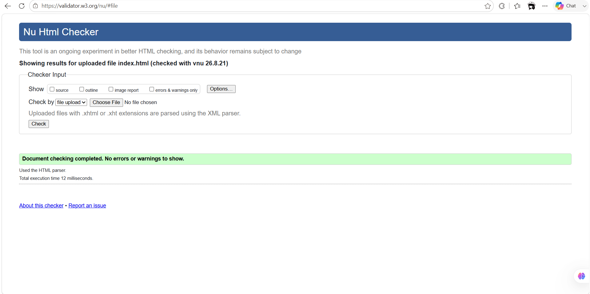
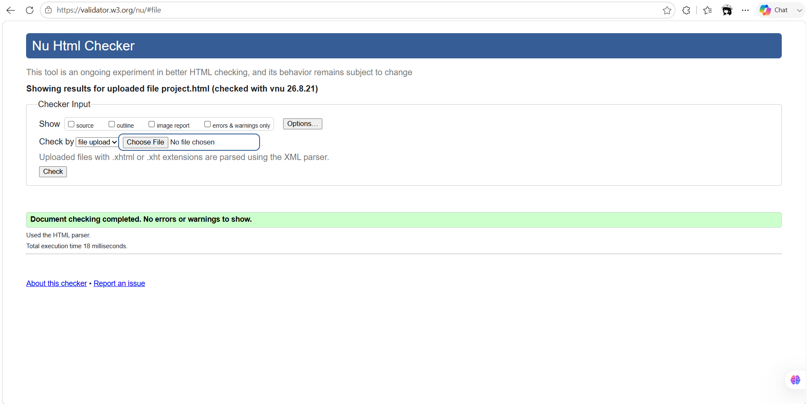
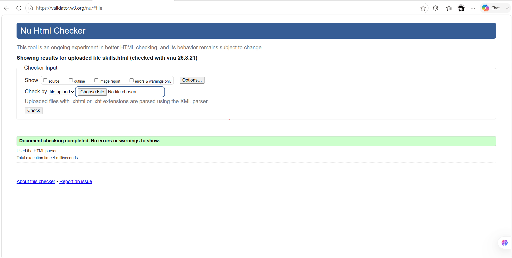
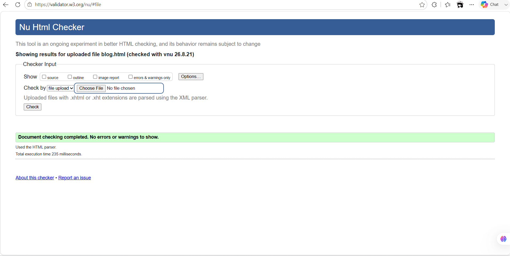
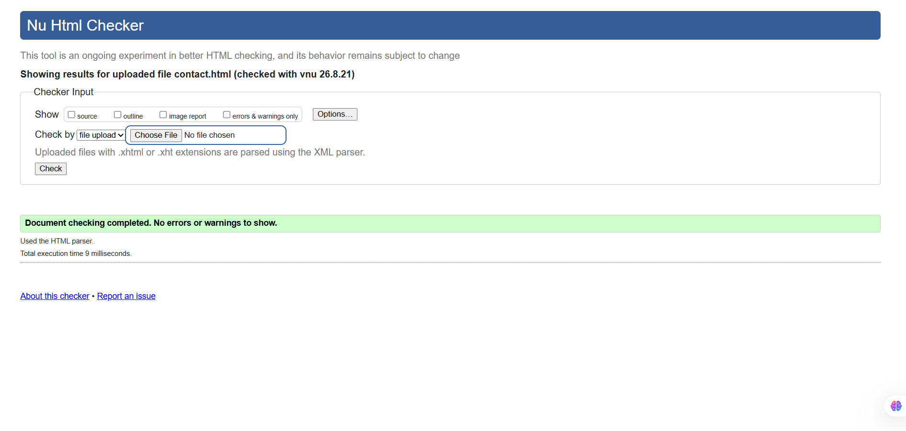
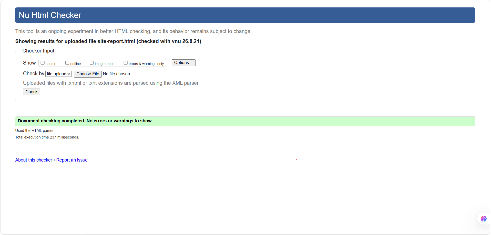
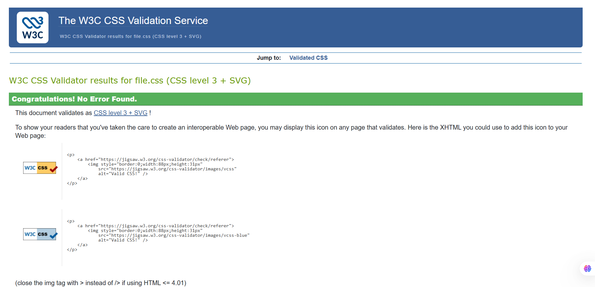

REFLECTIVE DEVELOPMENT LOG — CSY1063
Site Report
Introduction
This report reflects on my experience of learning the fundamentals of web development during CSY1063. The portfolio website was developed as a practical way to apply HTML, CSS, responsive design, accessibility, validation and basic development practices. At the beginning of the module, I had a basic understanding of HTML and CSS, but I was not confident about developing a complete multi-page website independently. Throughout the project, I gradually developed my technical skills while also learning how design decisions affect the usability and overall experience of a website.
Starting the Project and Learning HTML
I started by creating the basic HTML structure and planning the pages required for my portfolio. These included Home, Projects, Skills, Blog, Contact and Site Report. One of the first important lessons was understanding semantic HTML. Instead of using generic containers for everything, I used elements such as header, nav, main, section, footer, form and label to give the website a meaningful structure. I also learned how links, images, forms and alternative text contribute to a functional and accessible website. This gave me a stronger understanding of how the structure of a webpage is created before styling is applied.
Development Over the Term
I developed the website gradually rather than trying to complete every page at once. I first created the basic page structures and navigation before developing the Home page. I then created a shared CSS stylesheet so that typography, colours, spacing, borders and navigation remained consistent throughout the website. After establishing the main visual style, I developed the Projects, Skills, Blog and Contact pages and finally completed the Site Report. During development, I repeatedly reviewed the pages and made improvements to layout, image presentation, spacing and responsive behaviour. I also used Git and GitHub to manage and save changes to the project. This taught me that web development is an iterative process in which testing and refinement are as important as writing the initial code.
Design Decisions and User Interface
My main design goal was to create a portfolio that looked personal, modern and professional rather than like a pre-designed template. I selected a black background with white headings, light-grey body text and a warm amber accent. The dark background creates a strong visual identity, while the lighter typography provides contrast and readability. Amber is mainly used for important interactive elements, headings, links and small visual details so that users can quickly recognise important information.
For typography, I selected Fraunces for large headings because its serif style gives the website a more distinctive and editorial character. Inter was used for supporting text because it provides a clean and readable appearance. I also used consistent spacing, borders, cards and content sections to establish a clear visual hierarchy. The Projects page uses cards to make individual projects easy to understand, while the Contact page separates personal information from the message form so that users can navigate the information easily.
I explored modern minimalist portfolio designs through Awwwards and Behance . These sources helped me understand the use of whitespace, typography, contrast, content hierarchy and simple navigation. I used these ideas only as visual inspiration and created my own content, layout and implementation.
Ups and Downs
The development process included both successful and difficult moments. At the beginning, I found CSS positioning and responsive layouts challenging because changing one property could affect another part of the page. I also experienced problems with image paths, filenames, image sizing and spacing. There were times when an image did not appear correctly or a layout looked different from what I expected. These issues were frustrating, especially when the HTML appeared correct.
However, these problems became some of the most useful learning experiences. Instead of changing code randomly, I learned to inspect the HTML structure, check file paths, review CSS selectors and test one change at a time. One of the most rewarding parts of the project was seeing the individual pages gradually become a complete website with consistent navigation and responsive layouts. Successfully fixing layout problems and improving the presentation of images increased my confidence and taught me that debugging is an important part of development rather than simply a problem to avoid.
Coding and Debugging Experience
CSS Grid and Flexbox were particularly important in developing the website. I used Flexbox for navigation, hero sections and alignment, while CSS Grid helped me create project cards, skill categories and contact layouts. Media queries were then used to change the layout for smaller screens. Debugging involved testing the website in the browser, identifying unexpected behaviour and checking the relevant HTML and CSS. Through this process, I learned that debugging is not only about finding syntax errors. It also involves understanding how different elements interact and identifying why the browser produces a particular result.
Responsive Design and Accessibility
Responsive design was an important requirement because the website needed to work effectively across desktop, tablet and mobile devices. I used flexible widths, CSS Grid, Flexbox and media queries to adjust the layouts at different screen sizes. For example, multi-column project and skill layouts become single-column layouts on smaller screens. Images were also adjusted so that they remain visible without unnecessary cropping. I tested the pages at different viewport sizes and made changes when content became crowded.
Accessibility was also considered throughout the development process. I used descriptive alternative text for images, meaningful navigation labels, appropriate form labels and clear headings. The contact form includes required fields and appropriate input types. These decisions helped me understand that effective web design should consider usability and accessibility as well as visual appearance.
Validation and Testing
I used the W3C Markup Validation Service to check the HTML structure and the W3C CSS Validation Service to check the stylesheet. Validation was useful because it helped identify structural and styling issues that were not always obvious from the visual appearance of the website. I also tested navigation links, images, form controls, page layouts and responsive behaviour before finalising the portfolio.
HTML and CSS Validation Evidence
To ensure that my portfolio follows appropriate web development standards, I validated all six HTML pages using the W3C Markup Validation Service. I also validated the shared CSS stylesheet using the W3C CSS Validation Service. The validation process helped me identify and correct structural, markup and styling issues before final submission.
The screenshots below provide evidence of the validation results for each HTML page and the shared CSS stylesheet.
HTML Validation Results






CSS Validation Result

Video Demonstration
I created a short video demonstration of the completed portfolio. The video shows the main pages, navigation, responsive presentation and some of the design and development decisions made during the project.
Watch My Portfolio DemonstrationReflective Discussion of the Module
Looking back at my experience of CSY1063, I have developed a much stronger understanding of how HTML and CSS work together to create a complete user interface. At the beginning, I mainly focused on making individual elements appear correctly. By the end of the project, I was thinking more carefully about hierarchy, consistency, responsiveness, accessibility and the overall user experience.
The project also changed the way I approach problems. I learned that a website rarely becomes successful after the first attempt. Testing, reviewing, debugging and making small improvements are essential parts of the development process. If I completed the project again, I would plan the responsive behaviour and image organisation earlier and establish the shared stylesheet before developing all individual pages. This would reduce repeated adjustments later.
Overall, the module has made me more confident in designing, coding, testing and maintaining a multi-page website. More importantly, I now understand that successful web development requires a balance between technical implementation and user-centred design. This experience has provided a strong foundation for developing more advanced websites and applications in the future.
AI Assistance and Code Acknowledgement
During development, I used ChatGPT as a learning and development support tool. It helped me understand HTML and CSS concepts, identify possible coding issues and consider alternative layout solutions. I reviewed the suggestions rather than using them without understanding, adapted relevant ideas to my own website and tested the resulting code. The final page structure, content, visual design, colour choices, layout decisions and implementation were reviewed and adjusted by me. Using AI in this way supported my learning and helped me understand why particular HTML elements and CSS properties were useful.
References
- Google Fonts (2026). Google Fonts. Available at: https://fonts.google.com/ (Accessed: 18 August 2026).
- Mozilla Developer Network (MDN) (2026). CSS: Cascading Style Sheets. Available at: https://developer.mozilla.org/en-US/docs/Web/CSS (Accessed: 18 August 2026).
- World Wide Web Consortium (W3C) (2026). Markup Validation Service. Available at: https://validator.w3.org/ (Accessed: 18 August 2026).
- World Wide Web Consortium (W3C) (2026). CSS Validation Service. Available at: https://jigsaw.w3.org/css-validator/ (Accessed: 18 August 2026).
- Awwwards (2026). Awwwards — Website Awards. Available at: https://www.awwwards.com/ (Accessed: 18 August 2026).
- Behance (2026). Behance. Available at: https://www.behance.net/ (Accessed: 18 August 2026).
- OpenAI (2026). ChatGPT. Available at: https://chatgpt.com/ (Accessed: 18 August 2026).